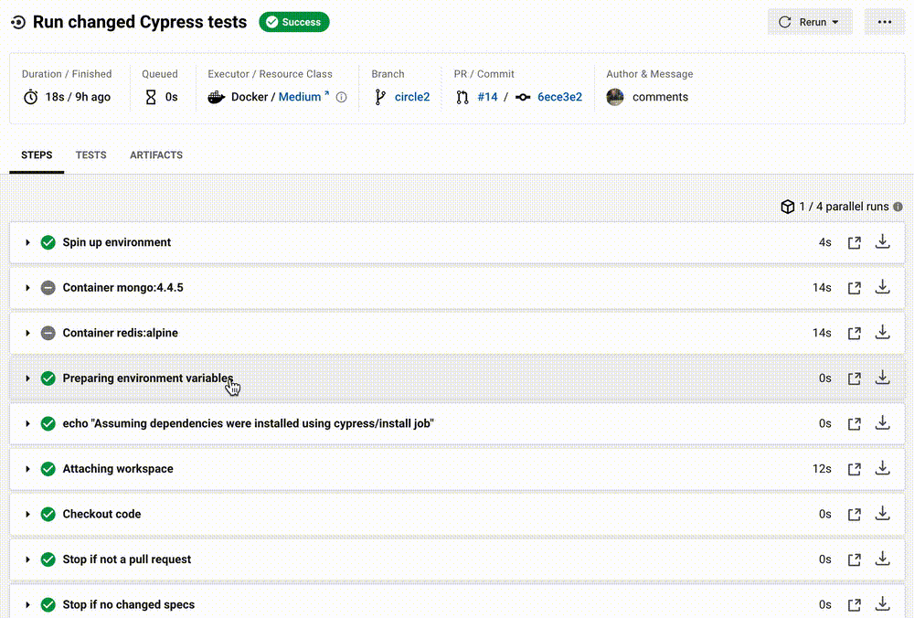
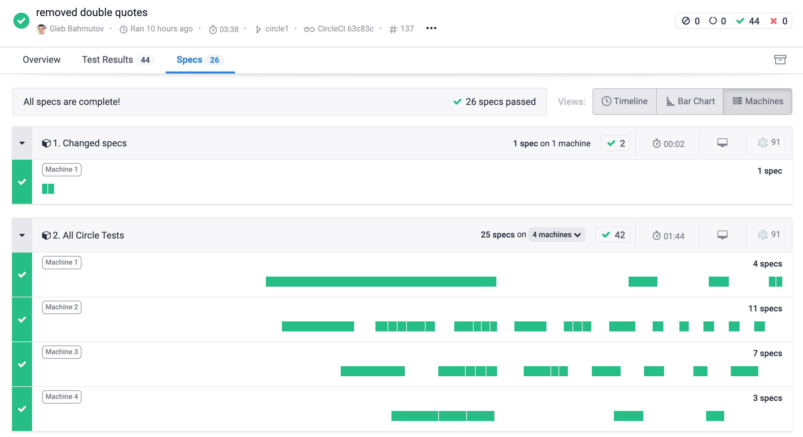
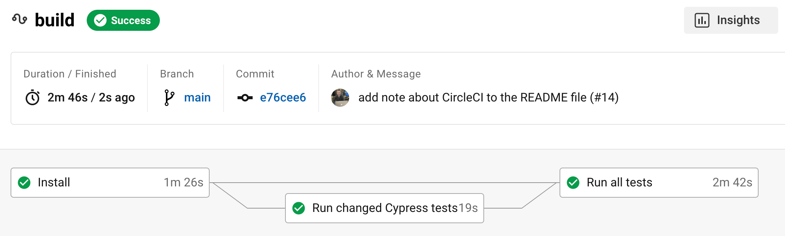
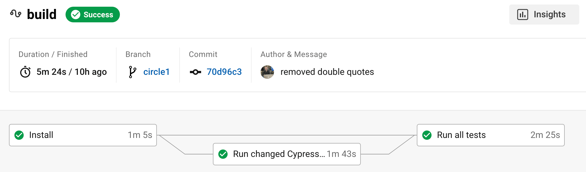

Nobody likes slow tests. Pushing a pull request commit and waiting for 30 minutes for the CI to work through all the specs, just to find out your changed spec has failed ... is bad. In this blog post, I will show how to run only the new and changed Cypress.io specs first. This blog post shows it using CircleCI workflows. A similar approach could be used with any CI provider. In fact, in my previous post Get Faster Feedback From Your Cypress Tests Running On GitHub Actions I have described how to achieve the same using GitHub Actions.
🎁 You can find the source code for this blog post in the repo bahmutov/chat.io
The initial workflow
Typically, we check out the source code, install NPM dependencies, start the application and run all tests using Cypress CircleCI Orb. For out application, we also need MongoDB and Redis services, and we can start them up using Docker images.
1 | version: 2.1 |
Parallelization
Great start. What if we want to run tests faster? We can split them across N containers, each executing some specs through Cypress parallelization. Read the blog post Parallel or not for more examples, but in general we will have one job to install dependencies and pass them to the test jobs via workspace.
1 | version: 2.1 |
Tip: you can run tests even faster by using CircleCI RAM disk feature, read the blog post Start CircleCI Machines Faster by Using RAM Disk.
Run changed specs first
But what if we want to open a pull request with changed / added Cypress specs and run them first? That way we find out if our changes are correct very quickly. We still will run all the tests to ensure nothing else is broken, of course.
Here is how we can do this: we will define a middle job between the install and "Run all tests" jobs. This middle job will only run the changed Cypress specs on pull requests. If the job is running for regular commits, the job will halt itself, skipping right to the "Run all tests" job. Here is the definition for the job:
1 | # run only the changed Cypress tests if any |
Let me explain the individual parts of the above job definition.
Install
1 | name: Run changed Cypress tests |
The modified specs job uses the installed dependencies from the workspace created by the "Install" job, just like "Run all specs" job.
Only run on pull requests
Each cypress/run can execute steps after the checkout step (even if we are using the workspace from the "Install" job and do not check out the code again). In our case, we want to skip the job if this is not a pull request:
1 | post-checkout: |
CircleCI has many built-in environment variables, you can see them in each job by expanding the step.

Count changes Cypress specs
Next we want to find all changed Cypress specs (modified or added). We can use the git diff --name-only origin/main command to list all changed files in the current branch vs the default branch "main". The output is a single filename per line, something like
1 | # let's say we only have two modified files |
Next, we can pipe the output through Unix utility commands to count the number of lines.
1 | # grep filters non-Cypress filenames |
The variable n will have a number greater or equal to zero - that's the number of changed specs in the current pull request. We can skip the remaining job commands if the number is zero. We also can skip running the changed specs if a lot of specs have changed - it would be more efficient to run all specs using parallelization in this case.
1 | echo "" |
Run changed specs
Now that we know we have a small number of changed Cypress specs, let's run them.
1 | # to "trick" the Orb into NOT installing again |
We skip the NPM install step using install-command: ... parameter. All dependencies have been installed already. We do need to start the application and wait for it to respond before running Cypress. We get the specs filenames and join them into a single string using Unix commands:
1 | # tr '\n' ',' converts multiple lines into a single comma-separated string |
We already know there are Cypress specs, thus no need to ignore the grep exit code using || true; syntax. The output before running the tests will be something like:
1 | Changed and added Cypress specs |
Note: you can limit the list of files to the changed / renamed / moved files using a git diff filter:
1 | specs=$(git diff --name-only --diff-filter=AMR origin/main | grep cypress/integration | tr '\n' ',') |
Finally, we need to form the cypress run command ourselves, since we need to pass the changed specs using the --spec command line argument.
1 | npx cypress run --record --group "1. Changed specs" --spec ${specs} |
Tip: I give indices to the group names like --group "1. Changed specs" and group: '2. All Circle Tests' because we are recording the test results on Cypress Dashboard. By prefixing the group names with numbers, the Dashboard run lists them in the expected order. You can see the recordings yourself at this public project

Results
You can find the complete CircleCI config file here and see the CircleCI runs here. When there are no changed Cypress specs, the middle job finishes quickly

But when there is at least one changed Cypress spec, it gets to run first, providing very fast feedback to the team

See also
Update 1: support, plugin and utils files
A pull request can modify other non-spec files inside the cypress folder, which will be included because they might match the grep filter. It is fine - Cypress still filters the --spec ... list using its testFiles and ignoreTestFiles configuration patterns.
1 | # changed files |
Notice that Cypress found one spec only, ignoring the utils.js file because it is ignored by the cypress.json file setting "ignoreTestFiles": ["utils.js", "README.md"].
Update 2: CircleCI config syntax
The CircleCI config file syntax can be intimidating. Luckily, you can check if the file is correct by running the CircleCI CLI utility locally to verify the file syntax.
1 | circleci config validate .circleci/config.yml |
Update 3: Parallel run
In the previous examples, we used a single cypress/run job to execute the changed specs on one CircleCI container. If we add parallel: true to the cypress/run job it will skip running post-checkout steps, because the Cypress CircleCI Orb does not run these steps in parallel mode. How do we ensure we halt the job properly in this case? I now use the following command in the cypress/run job to count the number of lines and specs, see the latest chat.io config.yml file for the current working version.
1 | command: | |
It can still fail if we modify a non-spec file, like cypress/integration/utils.js for example, still need to add a filter like that.
Note: I have written a robust CLI utility find-cypress-specs for finding changed spec files against another branch. Read the blog post Get Faster Feedback From Your Cypress Tests Running On GitHub Actions for details.